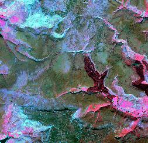
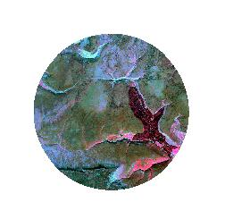
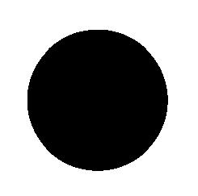

This tool can be used to create a colour-composite image from three bands of multi-spectral imagery. The user must specify the names of the input images to enter into the red, green, and blue channels of the resulting composite image. The output image uses the 32-bit aRGB colour model, and therefore, in addition to red, green and blue bands, the user may optionally specify a fourth image that will be used to determine pixel transparency (the 'a' channel). If no transparency image is specified, each pixel will be opaque. This can be useful for cropping an image to an irregular-shaped boundary. For example the following image:

can be cropped as such:

by using the following mask as the transparency channel:

The transparency channel can also be used to create transparent gradients in the composite image.
Notice that it is also possible to create either an RGB or Yellow-Magenta-Cyan colour-composite image by displaying three bands of multi-spectral data in the same map and setting the RGB/YMC bands by right-clicking each of the layers in the Layers tab. This can be an attractive alternative to the use of the Create Colour Composite tool, because it provides greater flexibility and control over the display of the resulting image. For example, the user is able to control colour characteristics by adjusting the Palette Non-linearity value in the Layer Properties tab. The user can then print or save the map for later display. If however it is desirable to combine all three bands into a composite image contained in a single file, then the Create Colour Composite tool is the best choice.
NoData values in any of the input images are assigned NoData values in the output image. The output raster is of the float data type and rgb data scale. Notice that images that have the rgb data scale are displayed using a 32-bit colour model (aRGB), in which case, the display palette in the Layers tab and Layer Properties tab are not valid.